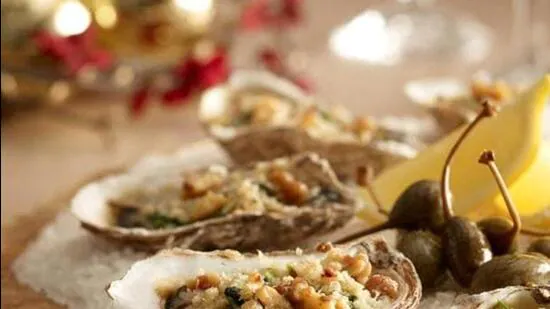

The Goa guidelines, notified last week, call for a quota system among harvesters and a closed season between July and October to facilitate breeding
 1, 2, 3 hindustantimesClams and oysters are found at Chicalim bay on the outskirts of Vasco da Gama, and pockets of River Sal in South Goa and River Chapora in North Goa (HT File/Shutterstock)
PANAJI: The Goa government has issued guidelines restricting the harvesting of clams except by people living within a 5-km radius from the site and asked them to ensure that only clams and oysters larger than 3cm be harvested.
The guidelines are designed to ensure “sustainable utilisation, conservation and management of bioresources” for controlled harvesting and conservation of edible clams. It applies to the entire state, the order notified by the government last week said.